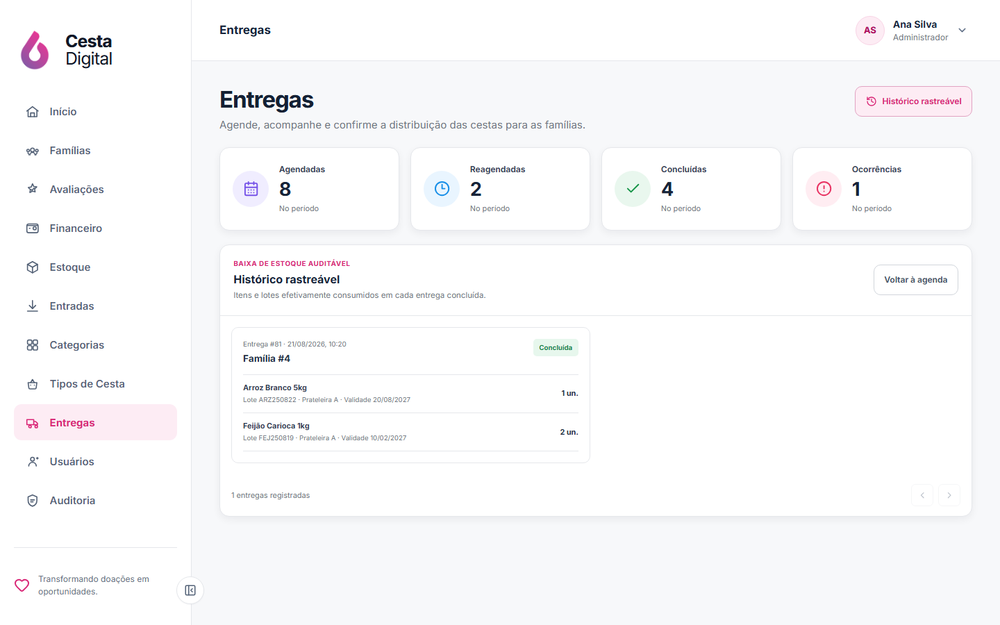
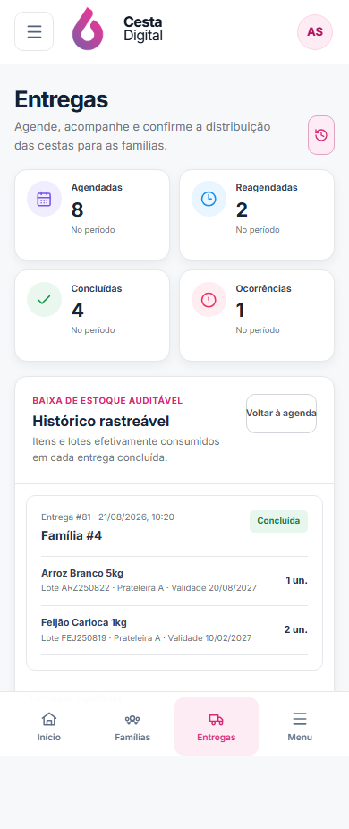

V2-10 · Entregas
Comparação fiel da direção visual com a agenda e a confirmação reais do Cesta Digital.
Aprovado por Gabriel · 26/08/2026Referência × implementação
Clique em qualquer imagem para abrir a captura original, em resolução integral, em uma nova aba.


Composição responsiva
Desktop mantém tabela e contexto selecionado; tablet e mobile usam cartões operacionais sem comprimir colunas.

Operação real preservada
Histórico de movimentações e novo agendamento continuam nas rotas e contratos existentes.




Fidelidade funcional
Períodos, busca, paginação e indicadores são calculados pelo novo contrato global do backend, não apenas pela página carregada.
A decisão social atual aparece no contexto da entrega; o novo agendamento oferece somente famílias aptas.
Como não há geolocalização ou motor de rotas, o mapa ilustrativo foi substituído por um painel operacional verificável.
Agendar, confirmar com baixa de estoque, cancelar, reagendar e consultar rastreabilidade continuam usando as APIs reais.